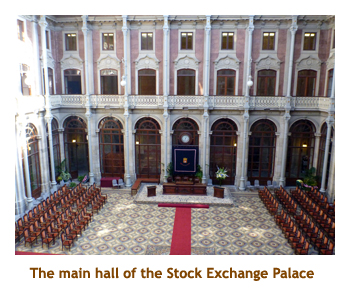
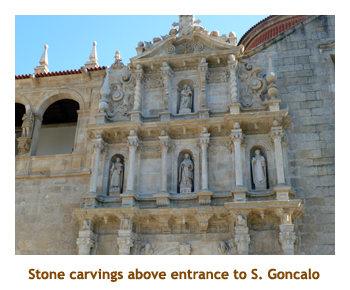
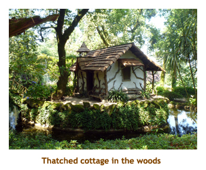
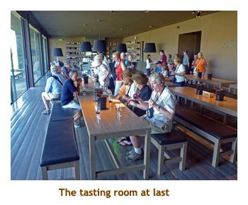
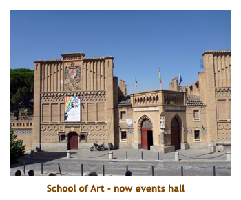

[ Home ] [ Travel ] [ Photography ] [ Pets ] [ Games] [ Rowing] [ Physics ]


Cruising on the Queen Isabel
Travel
Cruises
Past Cruises (Diaries)
Future Cruises
Rogues Galleries
Land Trips
Diaries (Land Trips)
Hawai'i - Big Island - 04'01
Hawai'i - Maui - 05'02
Hawai'i - Big Island - 04'03
Hawai'i - Kaua'i - 09'04
Hawai'i - Big Island - 04'06
Hawai'i - Maui - 04'06
Mainland China - 05'07
Phoenix, Arizona - 12'07
Greek Isles - 05'08
Hawai'i - Kaua'i - 09'08
Hawai'i - Big Island - 09'09
Hawai'i - Maui - 05'12
Hawai'i - Big Island - 04'13
Ireland - 08'13
Mexico - Cancun 11'13
France/Belgium/Lux 07'15
Hawai'i - Big Island - 05'17
England / Wales - 06'17
Hawai'i - Big Island - 09'19
Photography
Cameras
Underwater
Pets
Tara
Blackie
Whitey
Muffy
Ollie
Rusty
Fluffy
Rufus&Dufus
Games
Rowing
Physics
Rating (out of 5):
Ship  Food
Service
Itinerary
Food
Service
Itinerary 
Marjorie booked this Uniworld Douro River cruise as a "last minute" cruise, at very attractive T/A pricing. We had done the Rhine, Mosel, Danube and Rhone rivers, and it was time for something a little different. The cruise was packaged with a pre-cruise stay in Lisbon and a post-cruise stay in Madrid which just added to the appeal. The only thing that we were somewhat leary of was the fact that most of the "excursion targets" where not on the river, so significant busing was required each day. This turned out to be not as bad as we thought, as the countryside was very interesting.
The normal capacity of the Queen Isabel is 118 passengers, so we were a sparse crowd at only 78 passengers. I presume that the ship was listed with the T/A specials due to having 40 empty beds. By fluke, there were ten of us from Calgary! The rest were from Canada, the US, Britain and Australia. All of the crew were Portuguese, and even the ship itself as Uniworld doesn't own it. Our cabin was very small; the service was good, but spotty; and food was good but limited in selection - hence the 4 star ratings. But, in all, we really enjoyed the cruise. It was a surprise that the ship featured a waist deep swimming pool on the top deck. Only 2 or 3 people used it.
The entertainment was a little lite on this cruise. One of the staff played piano and sang each evening. Only one evening did they have "come aboard" entertainers, a male singer and female piano accompianist. We were tired that night and didn't stay up to listen to them, but we heard from others that they were wonderful. Another possible drawback to the cruise is that it was very busy cruise with little "my time". However, if you were here to really see Portugal, then this is how it should be! Each evening before our 7:00 dinner there was a "port talk" where Luiz explained all we would see and do on the following day.
The entire trip was in sunshine with occasional cloudy patches. We started
with temperatures of 21 or 22 degrees in Lisbon, then in to the mid 20's in Porto.
As we headed up river, things heated up to the low 30's, finishing with 35 to 37
degrees in Madrid and Toledo. By the end of the trip it was really quite stifling
and we really appreciated the air conditioned ship, hotels and buses. On the
bright side (pun intended) the beautiful blue sky was awesome for taking pictures.
Pre-cruise Day 1 (June 23, 24) - Traveling to Lisbon
Our good friends Ian & Shirley picked us up at 3:45 in the afternoon and drove us to the airport by 4:10. We were
lucky that we left home early as the traffic was really backed up on the Deerfoot. We went through check-in and
security, and were at the gate by 5:00. The plane left on time at 6:30, bound for London. We arrived in England
at 10:00 AM with lots of time until our 1:45 connection. Our connecting plane was 1/2 hour late arriving so
this in turn delayed us 1/2 hour in leaving to Lisbon. While vegging at Heathrow we heard about the Brexit vote.
Silly people! Our Portugal TAP flight arrived in Lisbon at 5:00. After grabbing our bags and going through
customs, we were picked up by a hotel shuttle and delivered to the Intercontinental Hotel at 6:00. We went
immediately to the Uniworld orientation lecture (and wine tasting) to learn about the upcoming events.
We were up to our room by 7:15 and our bags had been delivered to our room. We unpacked, went for a
walk around the hotel vicinity and went to bed (with sleeping pill) by 8:30. What a long day!
Pre-cruise Day 2 (June 25) - A day in Lisbon
We were up at 6:00 and headed down to the buffet breakfast. It was very
nice. We read for a bit and then joined our 8:30 bus tour. We had a comprehensive
driving tour of the city, with some walking stops at the Belem Tower, the
"Monument to the Discoveries", the Hieronymites Monestary
(with Vasco da Gama) and the old town.
In the old town we stopped at a bakery to sample the famous Portuguese custard
tart known as pasteis de nata. We also visited the Rossio Square, the busiest
square in Lisbon. We were back to the hotel by 1:00 for an afternoon on our own.
We walked a short distance from the hotel and chose a sidewalk cafe for a lunch of
breaded hake and potato salad.
Marjorie had grocery shopping on her mind, so we left the restaurant, trekked across a huge
green park and discovered an "El Corte Ingles" with a huge food floor. We bought some
drinks and snacks and then returned through the lovely park to the hotel. Marjorie
popped out for some more shopping while I organized our photos (to date) and then
read a bit. We ate the snack from the grocery store for dinner, watched some Euro
football (go Portugal!!) and then did an early turn in.
 |
Pre-cruise Day 3 (June 26) - Traveling Lisbon to Porto
Today we ended our visit to Lisbon with a northerly drive to Porto. We were up at 6:30 and had another
great hotel breakfast. We put our bags out at 7:30, settled our hotel account ($0) and then read a bit as
we waited for our 8:30 departure. We drove for about an hour and then had our first stop - a
one hour visit to the medieval
town of Obidos. The little village is so charming that the kings of Portugal traditionally gave it to their queens
as a wedding present. As we entered the town, we could have climbed some steps and walked along the
city wall, but it was narrow with no railings, so we did the main street instead. Others that did do the wall
were not impressed either. We walked to the end of the street where a bicycle race was in progress!
There were a number of structures being set up for the Medieval Market (July 14 to August 7). We
meandered back to the front gate using some smaller, winding lanes. Most of the buildings seemed to
be souvenir shops or restaurants, but were nonetheless very interesting. We reboarded the bus and
set out again through the cork forests of the Portuguese coast.
It was about 1/2 an hour to our next stop - the town of Coimbra. This was the capital of Portugal before it was moved to Lisbon. It is the third largest city in Portugal (after Lisbon and Porto) and the birthplace of 6 of Portugal's kings. It is also the home of one of Europe's biggest universities. We walked from the bus stop to the university complex and looked around the faculty buildings on the huge square. We entered a huge library (called the Joanina) which was endowed by King Joao V in the 18th century. There were over 300,000 books from the 16th to 18th centuries. The books are susceptible to damage from insects, but there is a colony of bats that keep them at bay (don't believe me? Google it!). After visiting the library we did a short walk through the town and stopped at a hotel for lunch. The lunch was unmemorable. All I can remember was a caldron of pigs' ears (which I didn't try!). Back on the bus, we drove for about 1.5 hours to the city of Porto. We arrived at our ship by 4:00 PM. We checked in and then unpacked our bags for our week long stay. Muster was at 6:15 and then dinner at 7:00. I had pork tenderloin which was very good. Dinner finished at 9:00 which wasn't so good! It was a long but interesting day. Off to bed.
Interlude - Port, Porto and Oporto
Day 4 (June 27) - A day in Porto
We were up for our 7:30 breakfast , and ready for our 8:45 bus tour of Porto. We were docked
on the Gaia side of the river so had to cross a bridge to the Porto side. There was quite a bit of traffic
so the going was slow. Our first stop was at the Stock Exchange Palace, a very palatial building
where the heads of the various port houses would meet to discuss port production matters. It reminded
me of the city halls (or Radhauses) we had seen in other countries. One room (the Arab Room) was
exquisitely decorated as a moorish room, much like the Alhambra in Granada. This 19th
century building is currently known as the Palacio da Bolsa and is used for official ceremonies and
royal visits. We spent about an hour visiting the different rooms and hearing about the history of the building
and the port producers association. Then it was back on the bus to continue our city tour.
|  |
 Our next stop was at a large city square. On one corner was a pair of churches.The Carmo (monks)
and Carmelitas (nuns)
churches look like the biggest church in the city. In fact, they are two churches separated by one of the world's
narrowest houses. This house was built to make all contact between the nuns and the monks impossible.
Facing the front of the complex the Carmo Church is on the right and Carmelitas Church is on the left. The Carmo
Church had a large blue tile scene on the ouside wall. On the opposite corner was a park leading up to the
Clerigos Tower, on the highest point of Porto. There was also a bookstore (the Lello & Irmao Bookstore )
which gained fame as not only the most beautiful bookstore in Europe, but also the place where J.K. Rowling
was rumoured to have gotten her inspiration for the Harry Potter books.
After another short drive we walked a short distance to the train
station which had beautiful blue tile wall murals. The murals depicted famous scenes from the history of Porto.
Finally we drove past the Henry the Navigator monument
and the red steel building where the Ferreira marketplace was located. We drove over the bridge to Gaia
and were back at the ship by 12:30. I really enjoyed this tour.
Our next stop was at a large city square. On one corner was a pair of churches.The Carmo (monks)
and Carmelitas (nuns)
churches look like the biggest church in the city. In fact, they are two churches separated by one of the world's
narrowest houses. This house was built to make all contact between the nuns and the monks impossible.
Facing the front of the complex the Carmo Church is on the right and Carmelitas Church is on the left. The Carmo
Church had a large blue tile scene on the ouside wall. On the opposite corner was a park leading up to the
Clerigos Tower, on the highest point of Porto. There was also a bookstore (the Lello & Irmao Bookstore )
which gained fame as not only the most beautiful bookstore in Europe, but also the place where J.K. Rowling
was rumoured to have gotten her inspiration for the Harry Potter books.
After another short drive we walked a short distance to the train
station which had beautiful blue tile wall murals. The murals depicted famous scenes from the history of Porto.
Finally we drove past the Henry the Navigator monument
and the red steel building where the Ferreira marketplace was located. We drove over the bridge to Gaia
and were back at the ship by 12:30. I really enjoyed this tour.
After lunch at 1:30 we headed off on another tour - a wine tasting at Taylor's. We drove up the hill just behind the docks and were let out at the port houses of Taylor and Croft. These two houses were owned by the same people. We were assigned to the Croft tour, so while waiting for the tour guide we popped into the Taylor sales shop to see what they had. The guide arrived so we toured through cool oak barrel storage rooms to the tasting room. We tried a white and a rose port (not your regular port!). Afterwards we hustled back to the Taylor shop to get two bottles of white port for Mike and Matt. Prices were really good! Then it was back to the ship (by 3:30). We wandered the souvenir shops in the docking area and Marjorie bought a table cloth and 3 tea towels (for herself, Christina and Stacy). We walked along the dock to where the Rabelo boats of the port houses were docked. These are replicas of the ships used to transport the wine from the Douro valley to Porto in the old days. It was very hot out, so we returned to read in the ship's air conditioned lounge. Then it was dinner time . I had lamb shank. Very good.
Day 5 (June 28) - A bus trip to Guimaraes
We had lunch and then enjoyed the 1:30 sailaway. Yes, we were finally leaving Porto after two days attached to the dock. Note: Over the past two days I had noticed that other cruise ships leaving our dock seemed to go the wrong way - towards the ocean rather than heading up river. Also, ships joining us at the dock seemed to come from the ocean direction. As our captain made the same mistake and headed oceanside, I realized what was happening. The Douro River curved to the right just downriver from the dock, hiding the estuary and the ocean. It turned out that a standard part of the cruise was to spend about an hour sailing out into the estuary and then doing a u-turn and heading back upstream as if starting from the ocean. Now heading in the right direction, we were heading for the village of Entre-os-Rios. We watched the beautiful riverscape roll by from the upper deck, but it got to be quite hot. At 3:00 there was a lecture on the Portuguese and Spanish explorers so we ducked into the air conditioned lounge. Afterwards we read and vegged in the lounge. We arrived at Entre-os-Rios at 6:00 PM. Dinner was at 7:00 and I had breaded cod. A very nice day.
Day 6 (June 29) - Amarante and Aveleda
|  |
 Our drive to Aveleda took about 1/2 hour. We drove through the village to
the outskirts and stopped at a wine estate (or quinta in Portuguese) that
had a heavily forested section. The Aveleda Quinta has been owned by the Guedes
family for 15 generations. We walked through the forest that contained flower
gardens, lakes and fountains, quaint buildings all in the cool shade of the
huge trees. The forest trail eventually led us to the estate mansion where
we went inside for a wine tasting. We were in the Vinho Verde (green wine)
region of Portugal ("green" meaning "young", similar to "Beaujolais", rather
than any green colouring), so our tasting consisted of young white and rose
wines. The wines were good but a little thin in flavour. After the tasting,
we roamed around the gardens and the out buildings. Beautifull! We really
enjoyed our forest stop - a brilliant choice for an excursion on a hot day.
Our drive to Aveleda took about 1/2 hour. We drove through the village to
the outskirts and stopped at a wine estate (or quinta in Portuguese) that
had a heavily forested section. The Aveleda Quinta has been owned by the Guedes
family for 15 generations. We walked through the forest that contained flower
gardens, lakes and fountains, quaint buildings all in the cool shade of the
huge trees. The forest trail eventually led us to the estate mansion where
we went inside for a wine tasting. We were in the Vinho Verde (green wine)
region of Portugal ("green" meaning "young", similar to "Beaujolais", rather
than any green colouring), so our tasting consisted of young white and rose
wines. The wines were good but a little thin in flavour. After the tasting,
we roamed around the gardens and the out buildings. Beautifull! We really
enjoyed our forest stop - a brilliant choice for an excursion on a hot day.
|  | |||
 |
Day 7 (June 30) - Lamego and Mateus
 |
|||
 |
Our second excursion was to the Casa de Mateus in Vila Real. This time we were headed north of the river.
The Mateus palace became famous when a line drawing of the palace was used on bottles of Mateus
rose wine in the 1970's. Mateus wine has nothing to do with the Mateus palace. It is actually produced
by Sandeman's who pay a fee to use the portrait and name of the palace. After leaving the bus, our first
view of the baroque style palace was across a small pond. The reflections were perfect! Then we hiked
around the pond to the palace. We were given a tour of the
inside of the palace which was furnished with 18th century furniture and exquisite Portuguese and Chinese
ceramics. The palace was built by the Mourao family in 1740. After the tour we had a tasting of wines
from the region (not Mateus, of course). We had free time then to browse through the family chapel and
then wander through the extensive gardens at the back of the estate. The gardens included a mini
version of the Versailles gardens. Not having been to Versailles, I am unable to judge the accuracy of
this claim. By this time it was 4:30 and time to get back on the buses for our next excursion.
The final part of our outing was a 1/2 hour drive up to a plateau and the hilltop winery of Quinta da Avessada. The whole plateau area has several large vinyards, all planted with Muscat grapes. The Moscatels wine is very popular in Portugal so that only about 10% of the annual production is exported. The owner, Luis Barros, has revived this winery and has partnered with the tourist industry to provide dinners and informative evenings (as well as a fun time) to augment the winery business. Luis is a very personable and interesting person with some of the guests likening him to Mr. Bean. He was hillarious when telling jokes. Our tour strated with a visit to the dark aging rooms. Then we had a tasting of the Muscat wines outside in the garden area while serenaded with an accordian and drum. Then we were called into dinner and had a vast array of "typical" Portuguese dishes. I really enjoyed the meal. Some people elected to do some group dances after the meal, while others of us enjoyed the evening sunshine in the garden. There were a number of very friendly dogs around the property and it turned out that they had 14 dogs, all of which had been abandoned at their farm at various times. At 8:30 we all piled back into the buses and were back to the ship by 9:00. While we had been partying, the ship had relocated from Folgosa to Pinhao so the drive home was somewhat shorter. We watched some of the Portugal / Poland soccer match in the lounge then headed to bed. It had been a long but very pleasant day.
 |
Day 8 (July 1) - Sandeman's and Pinhao
|  |
Day 9 (July 2) - Castelo Rodrigo
Day 10 (July 3) - To Madrid via Salamanca
From the plaza we walked though the old town to the university which was constructed by Alfonso IX in 1218 AD. We toured through the univesity building looking in at the large lecture halls. It was very interesting. There was a group in costume including a couple of musicians. I wasn't sure what that was about.Then we walked over to a large plaza where the "new" (16th century) and "old" (13th century) cathedrals were. The two cathedrals are attached together and, in fact, you get to the old cathedral by going through the new cathedral. Both churches were beautiful inside. We returned to the Plaza Mayor which ended the tour. We were given an hour to have lunch and then meet up at the plaza again for a walk to the buses. Uniworld had included lunch for the day in their land/cruise package and gave each of us 15 Euro which was quite adequate. Meals in Spain seemed to be pretty reasonably priced. We had spied a Carrefours (grocery store) earlier in the day and hustled to find it again. Marjorie bought some juices and a beer for me. We popped into a deli / bar and had an apple custard desert and a Coke.
We met back at the big plaza and walked down a narrow street to the bus. There had been no success in fixing the air conditioning so we were once more in a mobile oven. About 1/2 hour later we stopped at a photo op overlooking the walled town of Avila. The view of the hilltop medieval village was awesome. As we were reboarding the buses, we asked the other bus if there was room to 2 more people. Yes, they had room for us and a few more. The air conditioning felt awesome!! We enjoyed the final 1.5 hour drive to Madrid. We arrived at our hotel by 5:00. The Westin Palace was a beautiful older hotel. We checked in and unpacked. At 7:00 we joined the others for a walking tour of the area with the emphasis on restaurants. Marjorie and I decided that when in Spain, eat Japanese. We had tempura shrimp and sushi at "Miss Sushi". We returned to the hotel to watch some Euro soccer, then went to bed.
Day 11 (July 4) - Paintings and dancing in Madrid
 |
|||
Day 12 (July 5) - A day trip to Toledo
 Today was a full day trip to Toledo. We had a great breakfast in the hotel and then headed
out on the bus for a one hour drive to the ancient city. Toledo was the capital of Spain before the
center of power was moved to Madrid. As we approached
Toledo, the bus detoured to the hill on the opposite side of the river for a fantastic photo op - a view of
the city. Then we crossed the bridge and stopped in a special bus parking lot.
Right near the parking lot was a restaurant - the Hosta El Cardenal. We had some drinks and snacks to
fortify us for the city tour.
Toledo is a hilltop city, so the bus parking was much lower than the city. They had built into the hill
a series of 5 long escalators to ferry people up to the town level. Great idea! We entered the city walls
near the Jewish sector and walked to a huge synagogue. The design was very moorish. The only
sign of a Jewish connection was a star of David hidden in the intricate arab scroll work. Then
we continued to the old school of arts which is now an events hall.
Further on we came to a huge cathedral - the Primate Cathedral of Saint Mary of Toledo. We
went inside and it was enormous.
Today was a full day trip to Toledo. We had a great breakfast in the hotel and then headed
out on the bus for a one hour drive to the ancient city. Toledo was the capital of Spain before the
center of power was moved to Madrid. As we approached
Toledo, the bus detoured to the hill on the opposite side of the river for a fantastic photo op - a view of
the city. Then we crossed the bridge and stopped in a special bus parking lot.
Right near the parking lot was a restaurant - the Hosta El Cardenal. We had some drinks and snacks to
fortify us for the city tour.
Toledo is a hilltop city, so the bus parking was much lower than the city. They had built into the hill
a series of 5 long escalators to ferry people up to the town level. Great idea! We entered the city walls
near the Jewish sector and walked to a huge synagogue. The design was very moorish. The only
sign of a Jewish connection was a star of David hidden in the intricate arab scroll work. Then
we continued to the old school of arts which is now an events hall.
Further on we came to a huge cathedral - the Primate Cathedral of Saint Mary of Toledo. We
went inside and it was enormous.
|  |
Day 13 (July 6) - The long trip home
 Our time had come and it was time to head home again. We were up at 5:30 to
donate our luggage to the bellhop. Then it was down to the restaurant for
juice and buns. Our bus was at 6:30 to the airport. We got to the airport
by about 7:00 and checked in for our flight to Toronto. Things were pretty
well on time and we got to Toronto about 11:00. We had time to have a BBQ
beef wrap at Tim Horton's. Our next flight was from Toronto to Calgary where
we were ontime again. Ian and Shirley were waiting at the airport for us.
We were pleased that this time we would be landing at 4:30 and not having
to delay I&S. However, just after we landed there was a thunderstorm alert
so the ground crew weren't allowed to bring in our bags. We had to wait almost
an hour before the bags arrived. Poor I&S. Anyway, we were home by about
6:00 to find all was well and the kitties were happy to see us. Another wonderful
cruise!!
Our time had come and it was time to head home again. We were up at 5:30 to
donate our luggage to the bellhop. Then it was down to the restaurant for
juice and buns. Our bus was at 6:30 to the airport. We got to the airport
by about 7:00 and checked in for our flight to Toronto. Things were pretty
well on time and we got to Toronto about 11:00. We had time to have a BBQ
beef wrap at Tim Horton's. Our next flight was from Toronto to Calgary where
we were ontime again. Ian and Shirley were waiting at the airport for us.
We were pleased that this time we would be landing at 4:30 and not having
to delay I&S. However, just after we landed there was a thunderstorm alert
so the ground crew weren't allowed to bring in our bags. We had to wait almost
an hour before the bags arrived. Poor I&S. Anyway, we were home by about
6:00 to find all was well and the kitties were happy to see us. Another wonderful
cruise!!